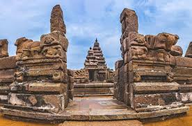

Mamallapuram
 |
 |
 |
Sitting along the Coromandel Coast of the Bay of Bengal, the seaport town of Mamallapuram or Mahabalipuram, in Tamil Nadu, is a beautiful beach destination that is slowly becoming the surfing hub of the country. Speckled with several UNESCO World Heritage Sites, courtesy of the ancient Pallava dynasty (3rd - 9th century BC), who were great patrons of art and crafts, Mamallapuram holds a baffling visual treat around every corner. Its awe-inspiring cave temples, sculptures and monuments leave one marvelling at the skill of the craftsmen of that time. With its striking bas reliefs and rock-cut temples, Mamallapuram is practically an open-air museum. Many of the temples, built with granite, relate the stories from the Hindu epic Mahabharata. Once a thriving port, Mamallapuram is now a UNESCO World Heritage Site complex, also famous for its seashell jewellery, seafood, cafes and markets and a breathtaking ocean-front. While you can soak in history visiting various historical sites, Mamallapuram's pristine beaches fringed by lush groves with a warm sun, invite surfers. With perfect sea waves between June and September, the beaches host surfing training sessions conducted by experts. The town is also a major stopover for visitors coming from Chennai and Puducherry.
Mahabalipuram was a well-established seaport between the 7th and the 10th centuries. It earned its name for the legend of demon king Mahabali being killed at the site by Lord Vishnu. Taken over by the kings of the Pallava dynasty, who shifted their capital from Kanchipuram to Mamallapuram, giving glory to king Narasimhavaranam, who was bestowed with the title of "Mammala" for his wrestling skills. During the rule of the Pallavas, many great artists, dancers, poets, writers found a foothold here and left their mark. The Pallavas made Mamallapuram a hub where they emerged as pioneers of new styles of art and architecture, making good use of their resources. However, the ingenuity of the Pallavas remained hidden from the world for centuries. When the region received its fair share of the limelight, it quickly became popular for its architectural marvels, gorgeous beaches, absolute serenity and mesmerising temples, and not to mention the fascinating legends of the Pallavas.